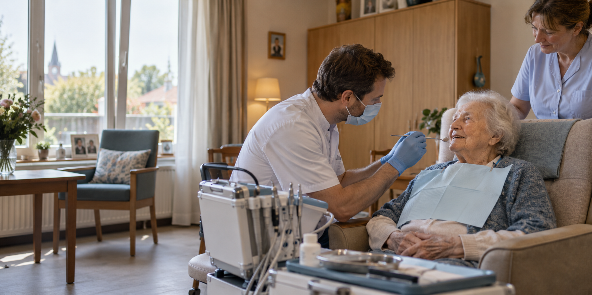

Dental care for residential care centres in Flanders
A dentist at your
care centre.
Global Smile Care brings experienced dentists and assistants to residents for checkups and straightforward treatment, in familiar surroundings.
A service by Global Smile Care, Antwerp.

The reason we come to you
The journey to a dental practice can be the hardest part.
For many older residents, arranging transport, accompaniment and time away from their care centre adds difficulty to a routine appointment. Bringing the dental team on site makes an examination easier to organise around the resident’s day.
Familiar surroundings.
Less to arrange.
More time for care.
Our care
Practical dental care,
on site.
Our mobile team visits residential care centres for dental examinations and simple treatments. We agree on visit days and timing together with your centre.
Dental checkups
Assess residents’ oral health and identify concerns that need attention.
Simple treatment
Provide straightforward dental care during planned visits to your centre.
Next steps
Discuss what is needed when care cannot be completed during an on-site visit.
The care available on site depends on each resident’s needs and the facilities at the centre. We discuss the details before visits begin.
How it works
A visit planned around your centre.
We start with a conversation, then agree on a workable schedule for your residents and staff.
Start the conversation- 01
Tell us about your centre
Share your location, the number of residents who may need care, and any practical questions.
- 02
Agree on a visit plan
We discuss visit days, timing and what our team can provide on site.
- 03
Welcome the dental team
Our dentists and assistants come to your centre for examinations and appropriate simple treatments.
- 04
Decide what follows
We discuss any further care a resident needs and plan future visits together.
 Illustrative concept image
Illustrative concept imageFor care centres
Built around the people already caring for residents.
Your staff know each resident’s routine. We bring the dental expertise and work with your team to make visits fit the centre’s day.
- Visit days agreed together
- Care in a familiar environment
- A direct point of contact for planning
The practice behind the service
From an established dental practice in Antwerp.
Global Smile Care welcomes patients at its practice in Antwerp-Zuid and also provides ambulant dental care in residential care centres. This website gives that centre service its own space, so care teams can see how to work with us.
Visit Global Smile Care2000 Antwerp
Questions
Before we begin.
Every centre works differently. Here are the first questions we can answer together.
Which care can you provide at our centre?
Our team comes for dental examinations and simple treatments. We’ll discuss what can be done on site for your residents before arranging visits.
How often can your team visit?
Visit days and timing are agreed with each care centre. Tell us about your residents and we can discuss a suitable schedule.
What if a resident needs more complex care?
We discuss the next step with the centre and the resident or their representative when a need goes beyond the care available during an on-site visit.
Start a conversation
Let’s talk about dental care at your centre.
Tell us where your centre is and what you need. We’ll discuss whether our ambulant service is a fit and how visits could work.